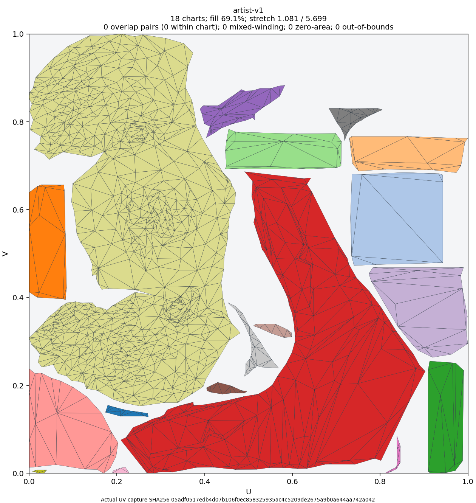
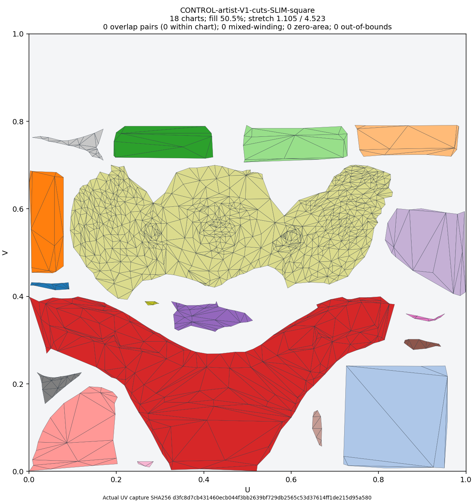
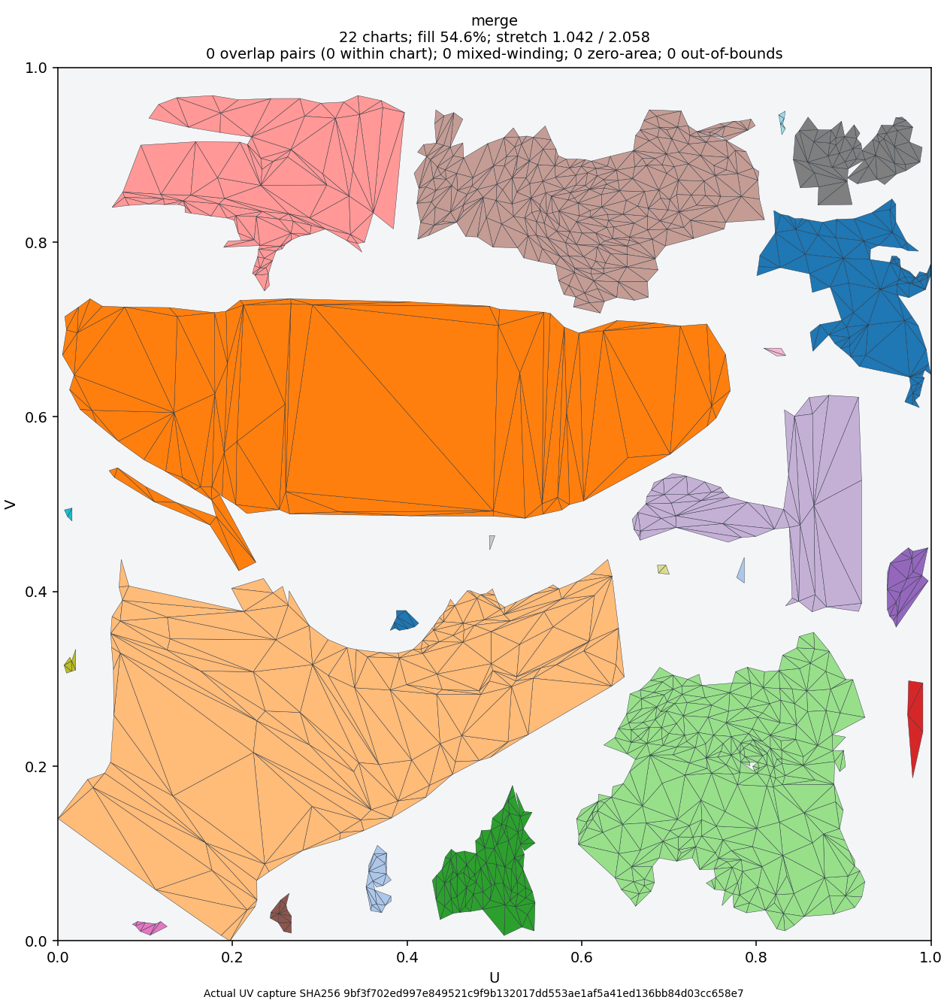
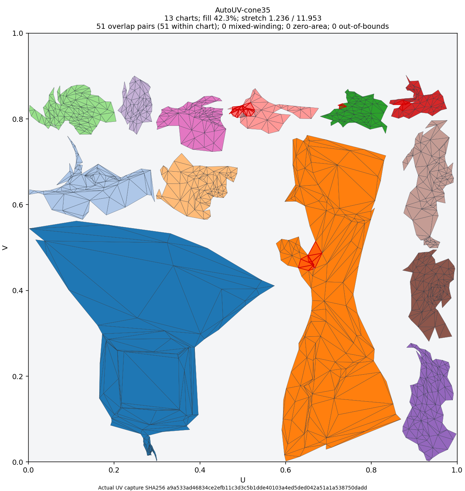
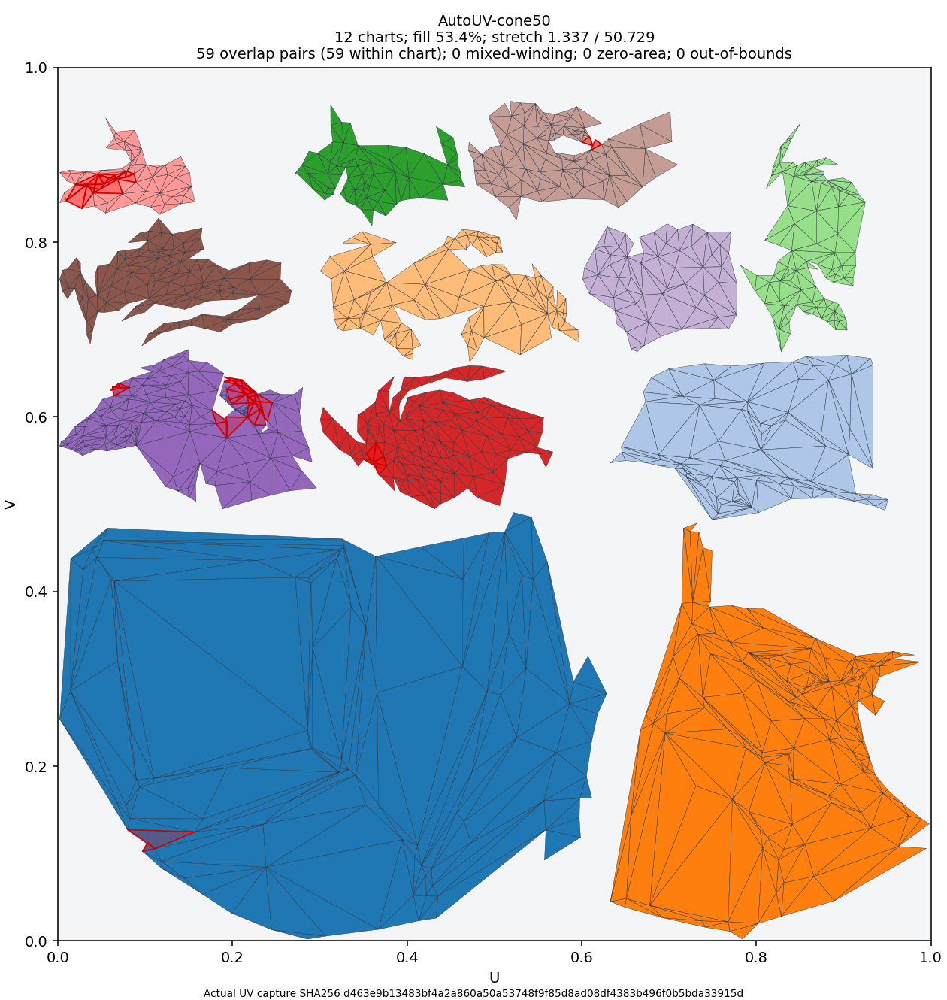
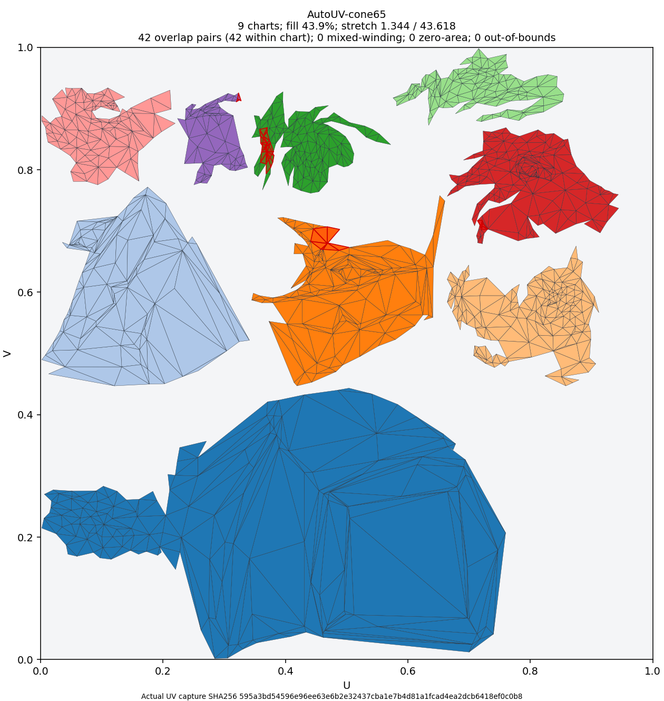
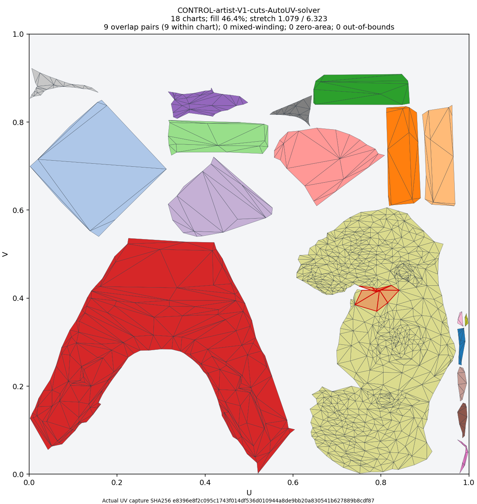

artist-v1
18 charts; fill 69.1%; stretch 1.081 / 5.699
0 overlap pairs (0 within chart); 0 mixed-winding; 0 zero-area; 0 out-of-bounds
V1 seam precision 100.0%; recall 100.0%; F1 1.000
Click a layout for its full PNG. Red outlines mark positive-area overlaps, including within a chart. Different colours identify charts, not artist parts. These are research results, not accepted defaults.

18 charts; fill 69.1%; stretch 1.081 / 5.699
0 overlap pairs (0 within chart); 0 mixed-winding; 0 zero-area; 0 out-of-bounds
V1 seam precision 100.0%; recall 100.0%; F1 1.000

18 charts; fill 50.5%; stretch 1.105 / 4.523
0 overlap pairs (0 within chart); 0 mixed-winding; 0 zero-area; 0 out-of-bounds
V1 seam precision 100.0%; recall 100.0%; F1 1.000

22 charts; fill 54.6%; stretch 1.042 / 2.058
0 overlap pairs (0 within chart); 0 mixed-winding; 0 zero-area; 0 out-of-bounds
V1 seam precision 25.4%; recall 30.2%; F1 0.276

13 charts; fill 42.3%; stretch 1.236 / 11.953
51 overlap pairs (51 within chart); 0 mixed-winding; 0 zero-area; 0 out-of-bounds
V1 seam precision 19.3%; recall 23.6%; F1 0.213

12 charts; fill 53.4%; stretch 1.337 / 50.729
59 overlap pairs (59 within chart); 0 mixed-winding; 0 zero-area; 0 out-of-bounds
V1 seam precision 15.7%; recall 19.1%; F1 0.172

9 charts; fill 43.9%; stretch 1.344 / 43.618
42 overlap pairs (42 within chart); 0 mixed-winding; 0 zero-area; 0 out-of-bounds
V1 seam precision 22.9%; recall 25.2%; F1 0.240

18 charts; fill 46.4%; stretch 1.079 / 6.323
9 overlap pairs (9 within chart); 0 mixed-winding; 0 zero-area; 0 out-of-bounds